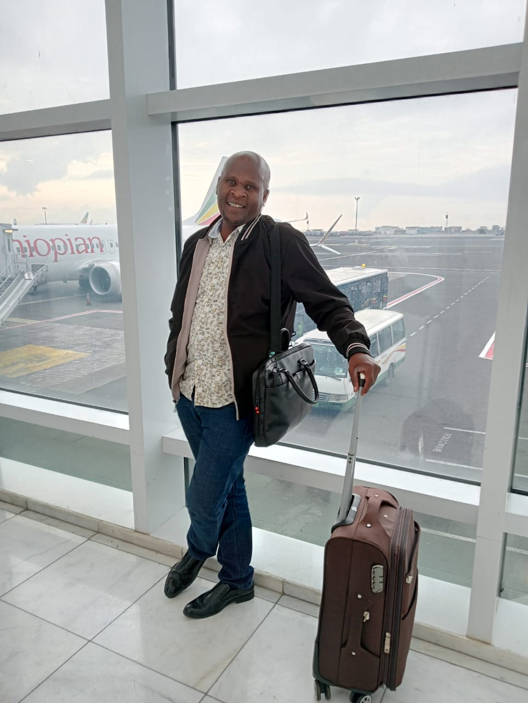
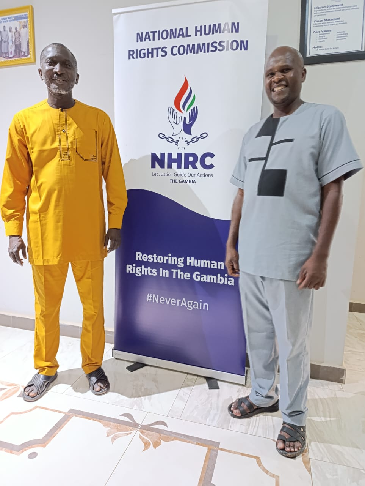

"Empowering Voices: My Journey to Gambia and the Fight for Human Rights Across Africa"

My recent trip to Gambia was nothing short of transformative. From the moment I landed, I felt a sense of purpose and anticipation, knowing that this journey would contribute significantly to my work as a human rights commissioner, especially in advancing the rights of intersex persons in Kenya. The vibrant atmosphere of Banjul, combined with the significance of the forum I was attending, made the experience both enlightening and deeply personal.
Arrival and Preparation
As I arrived at the airport, the warmth of Gambia immediately embraced me. I was greeted with efficiency and hospitality, ensuring my transition to the stunning Coco Ocean Resort & Spa, where the forum was to take place. The hotel, located just a short distance from Bijilo Beach, provided the perfect backdrop for what would be an intense, yet rewarding, few days. The sea breeze and serene environment were a stark contrast to the hard-hitting discussions that lay ahead, but it was exactly what I needed to focus and prepare for the events.
I had come to Gambia for the 7th Forum of National Human Rights Institutions (NHRIs), organized by NANHRI. This gathering, on the margins of the 81st Ordinary Session of the African Commission on Human and Peoples' Rights (ACHPR), was not just a meeting of minds—it was a crucial opportunity to collaborate, strategize, and advance our shared goals of protecting human rights across Africa. 
The Forum: A Confluence of Leadership and Advocacy
The theme of the forum, "The Role of African NHRIs in Strengthening Accountability, Promotion, and Protection of Human Rights in Africa," perfectly captured the essence of my mission. Over the course of several days, I was privileged to engage in discussions that tackled some of the most pressing human rights issues on the continent. These included the prevention of torture, the protection of socio-economic rights, and, most importantly for me, the protection of vulnerable groups such as transgender and intersex persons.
The highlight for me was the launch of the NANHRI report on the status of transgender and intersex persons in Africa. Witnessing this milestone, knowing the potential impact it could have on the lives of so many, filled me with both pride and a renewed sense of responsibility. The report’s findings, combined with the powerful conversations around it, reinforced the importance of the work we are doing to protect the rights of these often marginalized communities.
Commissioner Dr. Dennis Wamalwa KNCHR, Chairperson of the Human Rights Commission of Sierra Leone - Patricia Narsu Ndanema, Chairperson of NANHRI and CHRAJ - Dr. Joseph Whittal, Ambassador-Designate Immaculada Roca i Cortés - EU Ambassador-Designate to the Gambia, David Barissa - Senior Programmes Officer - NANHRI 
Meeting and exchanging ideas with other human rights leaders was both inspiring and humbling. I had the honor of spending time with Patricia Narsu Ndanema, Chairperson of the Human Rights Commission of Sierra Leone, and Dr. Joseph Whittal, Chairperson of NANHRI and CHRAJ. Their unwavering dedication to human rights in their respective countries reminded me that we are all part of a larger movement—one that transcends borders and unites us in our shared commitment to justice.
One of the most memorable moments was reconnecting with Dr. Saikou Kawsu Gassama, the Executive Secretary of the Gambia Human Rights Commission. Having previously hosted his commission in Kenya, this reunion felt more like a continuation of a shared journey rather than just another meeting. His insights and leadership in Gambia are truly commendable, and I left our conversations feeling hopeful about the future of human rights on the continent.
With the Secretary Gambia Human Rights Commission
Mr. Saikou Kawsu Gassama (PhD.)
A Taste of Gambia: The People and the Culture
While the forum was intellectually and professionally stimulating, the cultural immersion was equally impactful. Gambia is a country of immense warmth, not just in climate but in spirit. The people I encountered, whether at the conference or around Banjul, were kind and welcoming. Their deep-rooted respect for unity and diversity resonated with the very principles we were advocating for at the forum.
The cuisine was a delightful surprise. Gambian dishes, rich in flavor and tradition, offered a unique taste of the country’s cultural heritage. From deliciously spiced stews to fresh seafood by the ocean, each meal was an experience of its own. The food wasn’t just sustenance; it was a conversation starter, a way to connect with colleagues and delegates on a more personal level, as we shared stories and laughter over our plates.
(L-R) Comm Sarah Bonaya, CEO Bernard Mogesa, Comm Halimatou Dibba, VC Raymond Nyeris, Comm Njundu Drammeh, Comm Marion Mutugi & CEO Saikou Kawsu led a delegation on a study tour by @NHRCGambia to the @HakiKNCHR
Launch of the NANHRI Report: A Turning Point
One of the most significant moments of the trip was the launch of the NANHRI report on transgender and intersex persons. This report, which highlights the experiences and challenges faced by transgender and intersex individuals in nine African countries, is more than just a document—it's a call to action. The report provides not only an analysis of the current state of affairs but also a roadmap for future advocacy. As I stood there during the launch, I couldn’t help but reflect on the journey that had led us to this point and the long road still ahead.
The launch coincided with the 10th anniversary of Resolution 275, which addresses violence and discrimination based on sexual orientation and gender identity. The conversations that unfolded during the panel discussions were both heartening and challenging. It was a stark reminder of how far we’ve come, but also how much work remains to be done to ensure that everyone, regardless of their identity, can live with dignity and respect.
A Lasting Impact: Reflections and Future Plans
As the forum drew to a close, I found myself reflecting on the many lessons I would be taking back with me to Kenya. The friendships forged, the knowledge gained, and the strategies developed during this trip will undoubtedly shape the future of my work. The experience reaffirmed my belief in the power of collaboration, the importance of empathy, and the need for perseverance in the face of adversity.
My time in Gambia was more than just attending a conference; it was a reminder of why I do what I do. It reinforced the understanding that human rights work is not just about policies or reports—it’s about people. It’s about ensuring that every individual, no matter how vulnerable or marginalized, is afforded the dignity and rights they deserve.
As I boarded my flight back home, I felt a sense of accomplishment, knowing that the work we had done in Gambia would have a ripple effect across the continent. And while the challenges ahead are many, I returned to Kenya with a renewed sense of purpose, ready to continue the fight for human rights and justice for all.